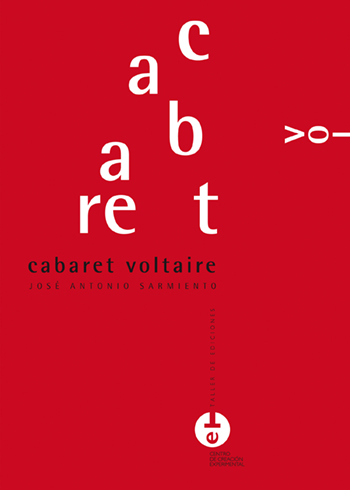
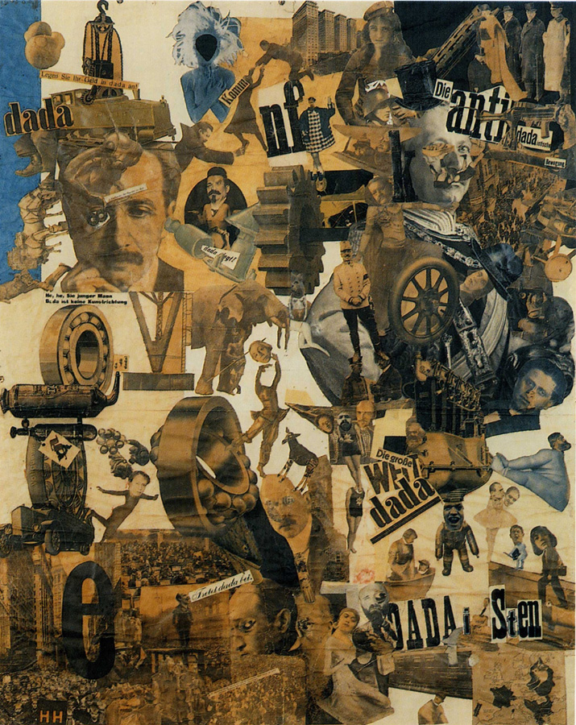
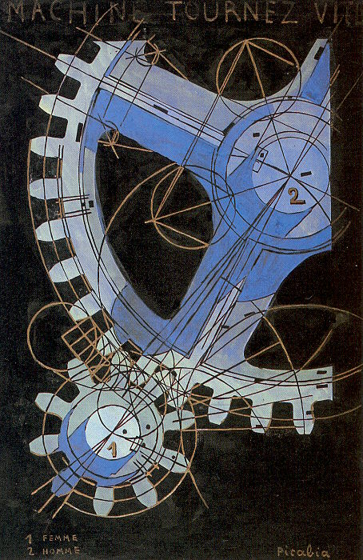
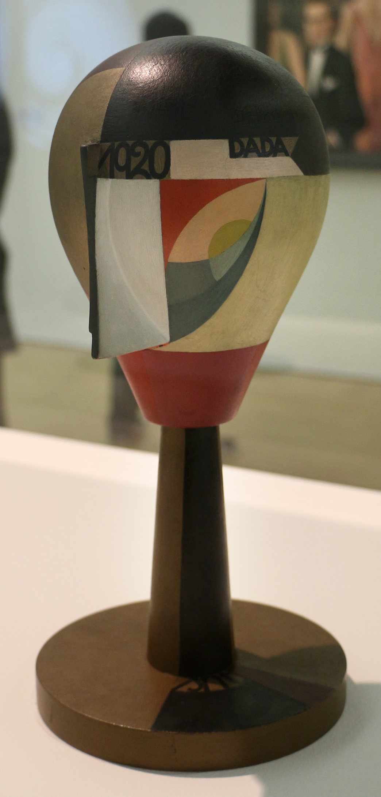
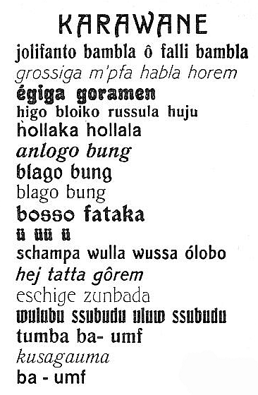

취리히 다다
다다(Dada)는 하나의 통일된 화풍이라기보다 1916년경부터 1920년대 초까지 여러 도시에서 전개된 국제적 전위예술운동이다. 공통된 것은 특정한 붓질이나 색채가 아니라 제1차 세계대전까지 초래한 유럽 문명의 합리성·진보·권위·예술제도에 대한 불신이었다. 다다는 “새로운 아름다움”을 만들기보다 먼저 무엇이 예술이며, 왜 예술은 고상해야 하는가를 공격적으로 질문했다.
그렇다. 다다는 미술사에서 하나의 예술운동 또는 전위운동으로 다룬다. 다만 야수주의처럼 공통된 색채, 입체주의처럼 공통된 공간해체법을 가진 “화풍”은 아니다.
기존 예술의 규칙과 권위를 의도적으로 공격한다.
합리성을 절대적인 가치로 보는 근대 문명을 의심한다.
잘 그리는 기술보다 무엇을 선택하고 어떤 맥락에 두는지가 중요해진다.
신문·사진·표·기계부품·공산품 등 일상 사물을 작품에 사용한다.
관람자를 즐겁게 하기보다 “이것도 예술인가?”라고 묻게 만든다.
산업·과학·기술이 전례 없는 대량살상에 사용된다.
중립국 스위스 취리히에서 망명 예술가들이 공연·시·소음·가면을 실험한다.
레디메이드가 “작가의 솜씨”라는 기존 예술관을 정면으로 흔든다.
혁명·경제위기·정치적 불안이 유럽 여러 도시로 이어진다.
포토몽타주와 강한 정치비판이 발전한다.
파리의 다다 일부가 무의식과 꿈을 탐구하는 초현실주의로 이동한다.


공산품이나 일상 사물을 선택하여 예술의 맥락에 놓는다. 작가의 손기술보다 선택과 개념을 강조한다.
신문·사진·광고 이미지를 잘라 붙여 기존 현실의 조각들을 새로운 정치적·비판적 관계로 재조합한다.
우연한 배열, 즉흥 공연, 의미를 없앤 음절과 소리를 사용하여 논리와 계획의 통제를 약화한다.
| 기법 | 무엇을 공격하거나 바꾸는가? |
|---|---|
| 레디메이드 | “예술은 작가가 직접 만든 아름다운 물건이어야 한다”는 생각 |
| 콜라주 | “회화는 물감과 캔버스만으로 구성되어야 한다”는 생각 |
| 포토몽타주 | 사진의 객관성을 깨고 대중매체 이미지를 비판적으로 재조합 |
| 우연 | 작가가 작품의 모든 요소를 의식적으로 통제해야 한다는 생각 |
| 소리시 | 언어는 의미와 문법을 가져야 한다는 생각 |
| 퍼포먼스 | 예술은 영구적으로 남는 물건이어야 한다는 생각 |
| 중심지 | 대표 인물 | 특징 |
|---|---|---|
| 취리히 | 후고 발, 에미 헤닝스, 트리스탄 차라, 한스 아르프 | 반전·공연·소리시·우연·카바레 문화 |
| 뉴욕 | 마르셀 뒤샹, 프란시스 피카비아, 만 레이 | 레디메이드·기계 이미지·예술 개념에 대한 질문 |
| 베를린 | 한나 회흐, 라울 하우스만, 게오르게 그로스, 존 하트필드 | 강한 정치성·포토몽타주·바이마르 사회 비판 |
| 하노버 | 쿠르트 슈비터스 | 폐기물과 인쇄물로 만든 ‘메르츠(Merz)’ 작업 |
| 파리 | 트리스탄 차라, 앙드레 브르통, 루이 아라공 등 | 다다의 도발과 문학적 실험이 초현실주의로 이동 |


| 질문 | 다다 | 초현실주의 |
|---|---|---|
| 출발점 | 전쟁과 문명에 대한 불신 | 다다의 반이성적 태도 + 프로이트의 무의식 |
| 핵심 태도 | 부정·도발·해체 | 무의식·꿈·욕망을 통한 새로운 현실 탐구 |
| 우연 | 합리적 질서를 깨뜨리는 수단 | 의식의 통제를 줄이고 무의식을 끌어내는 수단 |
| 목표 | “기존 예술을 믿지 않는다.” | “이성 너머에서 새로운 현실을 찾는다.” |
다다는 국가별로 별도의 HTML을 만들 필요가 없는 대표적인 사례다. 공통 철학은 반예술·반권위·우연·기존 합리성에 대한 불신이지만, 각 도시의 정치·문화 상황에 따라 강조점이 크게 달라졌다.
| 지역 | 지역적 특징 | 대표 인물 |
|---|---|---|
| 스위스 · 취리히 | 전쟁을 피해 모인 국제적 망명 예술가들의 반전적·공연적 다다. 소리시, 가면, 우연과 즉흥성이 중요했다. | 후고 발, 에미 헤닝스, 트리스탄 차라, 한스 아르프, 조피 토이버아르프 |
| 미국 · 뉴욕 | 유럽 전쟁 경험보다 산업·기계·대량생산과 예술 개념 자체에 대한 질문이 강했다. | 마르셀 뒤샹, 프란시스 피카비아, 만 레이 |
| 독일 · 베를린 | 전후 혁명과 바이마르 정치의 혼란 속에서 가장 정치적인 다다가 전개되었다. 포토몽타주가 핵심 수단이 되었다. | 한나 회흐, 라울 하우스만, 게오르게 그로스, 존 하트필드 |
| 독일 · 하노버 | 직접 정치운동보다 폐기물과 일상 인쇄물을 새로운 조형언어로 재조합한 개인적 ‘메르츠’가 특징이다. | 쿠르트 슈비터스 |
| 프랑스 · 파리 | 문학적 도발과 자동기술 실험이 강해지며 1920년대 초 초현실주의로 이어졌다. | 트리스탄 차라, 앙드레 브르통, 루이 아라공 |
이미지는 자료 폴더의 로컬 이미지 파일을 사용한다.
다다는 “이런 양식으로 그려라”라는 규칙을 만든 사조가 아니라, 전쟁과 합리주의, 국가주의, 미술 제도 전체가 정말 믿을 만한가를 공격한 운동이다. 그래서 다다를 이해할 때는 하나의 화풍보다 도시별 집단, 공연과 출판, 콜라주와 레디메이드, 정치 풍자와 우연의 방법을 함께 봐야 한다.
위 국가별 전개 표에 제시한 인물은 상단에 이미 소개되었는지와 관계없이 모두 다시 확인할 수 있게 배치했다. 로컬 작품 이미지가 없는 경우에는 활동과 매체를 설명하는 이미지 추가 예정 카드로 남긴다.
헤닝스는 카바레 볼테르의 공동 창립자로서 공연, 낭송, 무대 활동을 통해 취리히 다다의 집단적 성격을 만들었다.
차라는 선언과 국제적 출판 네트워크를 통해 취리히와 파리 다다를 잇고, 다다의 언어적 도발을 확산시켰다.
아르프는 우연과 자동성을 이용해 작가의 통제를 약화시키고, 질서가 의도에서만 나온다는 믿음을 흔들었다.
선택·명명·전시 맥락이 작품의 조건이 될 수 있는지를 묻는 레디메이드로 예술 제도의 기준을 뒤집었다.
만 레이는 오브제와 사진 실험으로 뉴욕 다다의 기계적 냉소를 파리의 초현실주의적 이미지 실험과 연결했다.
신문과 광고 사진을 충돌시키는 포토몽타주로 정치 권력과 젠더 규범을 비판했다.
하우스만은 인쇄 매체의 사진 조각을 재배열해 전후 독일의 정치와 대중매체를 공격했다.
그로스는 날카로운 풍자와 왜곡된 인물로 군국주의와 부르주아 위선을 드러냈다.
하트필드는 사진의 사실성을 뒤집는 포토몽타주로 선전과 파시즘을 시각적으로 해체했다.
버스표와 포장지 같은 폐기물을 조형 질서로 다시 묶어 다다의 파괴성을 새로운 구성으로 바꾸었다.
브르통은 파리 다다의 부정성을 꿈과 무의식, 자동기술의 새 창작 원리로 재편해 초현실주의로 이끌었다.
아라공은 파리의 문학적 다다 네트워크에서 활동하며 초현실주의로 넘어가는 전위 문학의 논쟁을 함께 만들었다.

기어와 숫자, 성별 표기가 결합해 인간관계와 욕망을 기계 장치처럼 바꾼다. 피카비아는 회화의 감정적 표현보다 다이어그램, 광고, 공업 이미지의 차가운 언어로 다다의 조롱을 만들었다.

머리는 초상도 장식품도 아닌 기하학적 오브제로 제시된다. 다다가 단순한 파괴 운동만이 아니라 무용, 공예, 디자인, 추상 조형으로 확장될 수 있었음을 보여준다.
이미지: Sailko, CC BY 3.0, Wikimedia Commons

의미 있는 문장 대신 낯선 음절과 활자 배열이 전면에 나온다. 다다의 소리시는 언어를 정보 전달 수단에서 떼어내 몸, 리듬, 부조리의 재료로 되돌렸다.